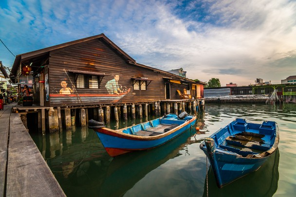

Escape Park
Escape Park is an adventure park that combines thrill and nature, offering a variety of outdoor activities like zip-lining, obstacle courses, and climbing.
It's designed for those seeking both excitement and a connection with the natural environment, making it a great destination for adventurous souls looking to escape the routine and enjoy some outdoor fun.
Unique Travel
Kek Lok Si
Kek Lok Si is a renowned Buddhist temple located in Penang, Malaysia.
As the largest Buddhist temple in the country, it is celebrated for its stunning architecture, intricate sculptures, and sprawling grounds.
The temple complex features the impressive Pagoda of Rama VI, which offers panoramic views of the surrounding area, and a large statue of the Goddess of Mercy, Kuan Yin.
Chew Jetty
Chew Jetty is a historic and picturesque waterfront area in Penang, Malaysia. It is part of the George Town UNESCO World Heritage Site and is known for its traditional wooden stilt houses built over the water.
The jetty is named after the Chew clan, one of the Chinese clans that settled in the area. Visitors can stroll along the wooden walkways, experience the unique blend of cultural heritage and local life, and enjoy the scenic views of the harbor and city skyline.
Scenic image display
Between the lush hills at the end of the road, there was a dreamlike blue water light in front of the open terrain.
The no man's land of Penang is a sanctuary for endangered species such as the Malayan tiger.

- 